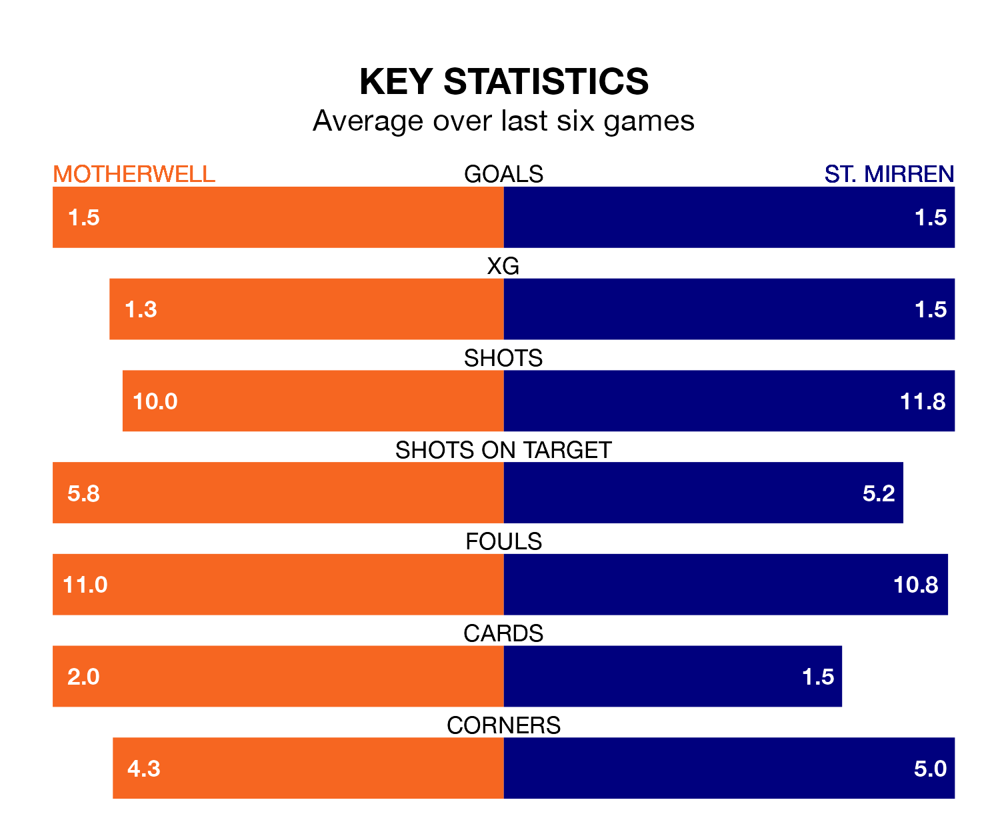

Motherwell host St. Mirren on Saturday at Fir Park in the Premiership.
In their last league match, on March 16, Motherwell lost to Aberdeen 1-0 at home.
St. Mirren also lost, 5-2 away at Kilmarnock, with Charles Dunne and Mikael Mandron on the scoresheet.
With 36 goals in 30 games so far this season, St. Mirren are scoring at below the league average rate with 1.2 goals per game. But they are conceding fewer than average too, letting in 37 goals at a rate of 1.2 per game.
Motherwell, meanwhile, are above average scorers, with 1.4 goals per game, compared to a league average of 1.3. They have conceded 1.6 goals per game.
In the last 10 years, Motherwell and St. Mirren have played each other on 27 occasions. Motherwell won 11 of them, St. Mirren eight, and they drew eight times.
On average, Motherwell scored 1.4 goals and the Buddies 1.0 in those matches.
Their last meeting was on December 16, when they played out a 0-0 draw.
In Zachary Hemming, the Buddies can rely on one of the league's safest pair of hands. He has kept 10 clean sheets in his 30 appearances this season in the Premiership.
In the hosts' net, Liam Kelly has three clean sheets in 30 games. He has conceded a goal every 66 minutes, 20% more often than the 79 minutes between goals for Hemming.
Motherwell are in mixed form in the Premiership, with two wins and a draw from their last six games.
With three wins and a draw over that period, the away team's form is better – they have taken 10 points from 18, compared to Motherwell's seven.
The home side are eighth in the table after 30 games, of which they have won seven and drawn 11, earning 32 points.
St. Mirren are three places ahead of Motherwell in fifth, with 12 wins and six draws putting them on 42 points.
Updated: 12:16 (UTC), 25/03/24